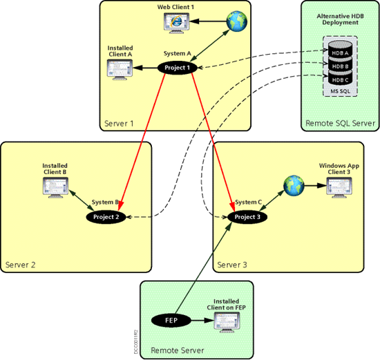

Hierarchical Distributed Systems on Separate Servers
Hierarchical distributed systems are typically deployed on different physical (or virtual) computers, each running at least one project. Therefore, you can set up a Hierarchical distributed system that has multiple systems hosted on separate server computers connected on the same network.
The projects to be configured in such a distributed system are on different servers and secured.
The SQL Server can be on each server with an HDB linked to a project on that server. Alternatively, you can have a remote SQL Server with an SQL instance having multiple HDBs, each linked to a project on a separate server. In both the cases, to see the global data, for example, global reports and so on, you must link the HDBs on different servers. (See Link HDBs on different SQL Servers in Additional Procedures for Configuring Projects in Distribution in Setting up the Distributed System.)
In such a configuration, when you log onto the Installed Client (or Windows App Client) of the Supervising System, you can work with the linked Supervised Systems located on the different servers.
However, when you log onto the installed client connected to one of the Supervised System, you can only work with that Local System. You can neither see the data of the Supervising System nor of any of the sibling Supervised System on other servers.
Deployment Diagram
